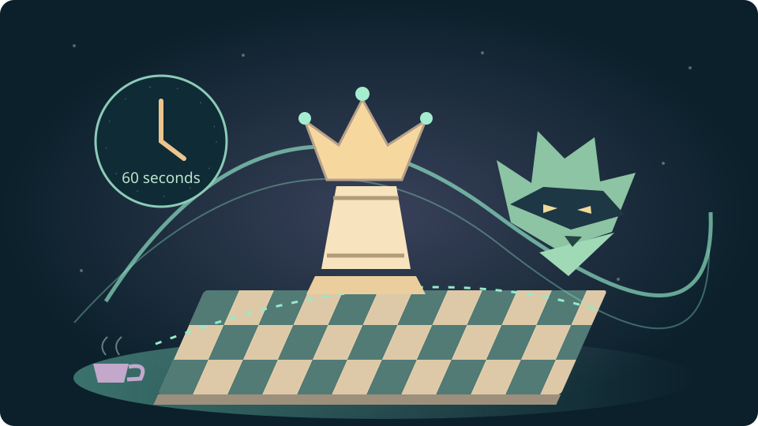

EASTERN BULLET ARENA · 30 OCTOBER 2026
Bullet Manninja.
The Queen-Sac Force.
Dilorias makes her dramatic exit.
The rest of the cast gets a very short rehearsal.
One-minute chess, open lines, king walks and a rook with an excellent sense of timing. Tara, Dasha, Michael, Emanuel and Glover join the Woodland crew at the midnight board.

THE MIDNIGHT TABLE · NEW FICTIONAL COMMENTARY
A physical whiteboard stands beside the chessboard. Tara uncaps a marker. Dasha asks to see the next reply. Michael wants to know whether the sacrifice worked; Emanuel loads the actual game. Glover makes room for the chorus.
Queen Dilorias: “I am available for dramatic exits. Kindly tell the rook when its entrance is due.”
The dialogue is newly written for this review. The moves, opponents and results come from the PGN. Manny remains the Woodland side whether playing White or Black.
THE FORCE STILL HAS SQUARES
Let’s see what happened.
Read-only replay. Arrow keys step the game; flip changes your view. No countdown here.
HOW WE ARE READING THE SACRIFICES
What did the queen buy?
A forcing reply?
A check can change the scene. Trace every legal answer before treating one reply as compulsory.
A job for the others?
Name the rook’s file, the knight’s fork, the bishop’s diagonal. The pieces left behind need concrete work.
A recorded finish?
A clock win is a win. A queen recovery is a tactic. The game’s last position tells us which ending actually happened.
All fifteen games with unmatched queen departures ended in losses in this export. The interesting recovery ideas still belong in the review. No clock stamps are supplied, so the file cannot tell us how long an opponent spent answering an offer.
SEVEN SCENES FROM THE NIGHT SHIFT
The crew gathers at the board.
SMALL POSITIONS · SHARP EYES
Try the Force, one move at a time.
Three real positions from the export. Two answers explore unplayed branches; each is labeled. No rating, timer or saved score.
ALL TWENTY-NINE · EARLIEST FIRST
The complete night’s log.
Click an opponent to load that game. Every game has its own cast commentary in the replay room and in the downloadable full review. Results below are White’s score first; they are game results, not arena points.
| # | Opponent & chapter | Manny | Result | Recorded ending |
|---|
EMANUEL’S NEXT REHEARSAL
Keep the cloak.
Give the rook its cue.
Replay a queen offer once without the clock. Name the simplest capture. Then find one precise task for each remaining attacker. In your next bullet game, try checking that single relationship before adding a new threat.
The last game’s c-file recovery is worth remembering. So is the knight fork in game twelve. Those are patterns the Manninja can recognize again.
Practice seeing the reply ↗ · Try one-legal-move mini-puzzles ↗THE RECORD UNDERNEATH THE THEATRE
Sources, rechecks & the whole review.
How this review was checked
The original file is retained byte for byte. All 1,621 plies parse legally. Games are sorted by UTC start time; the export was newest first. The opponents’ exported ratings range from 963 to 2514, with a median of 1670. Ratings are context, not character roles.
The primary scan used Stockfish 14.1 at 40,000 nodes per position, one thread and 64 MiB hash, with no configured tablebases. Nine teaching positions were rechecked at 500,000 nodes with three candidate lines. This review does not compute a Lichess accuracy score. Checkpoint piece artwork: Colin M. L. Burnett / python-chess, attribution and GPL license. The source scripts are analyze.py, deepen.py, build_review.py and editorial.py.
A “queen-for-material departure” counts a captured Manny queen when the opponent still has a queen after Manny’s immediately following reply, if one was recorded. This distinguishes fifteen unmatched queen losses from nine immediate queen exchanges. It is a structural count; the PGN alone cannot assign intent. Later recovery remains part of the game.
Game 10 ends with Black’s bare king and a recorded time-forfeit draw. Lichess’s timeout rule explains why a side that cannot mate receives a draw when the other side’s time expires. The file has no per-move clock annotations, so it cannot establish premoves or reconstruct the final seconds.
The newer review panel comes from The House of Returning Authors and Thursday, with the existing Woodland cast convention. The review’s new dialogue is fictional. Original scripts are unchanged; the physical whiteboard remains present in the review’s staged room.